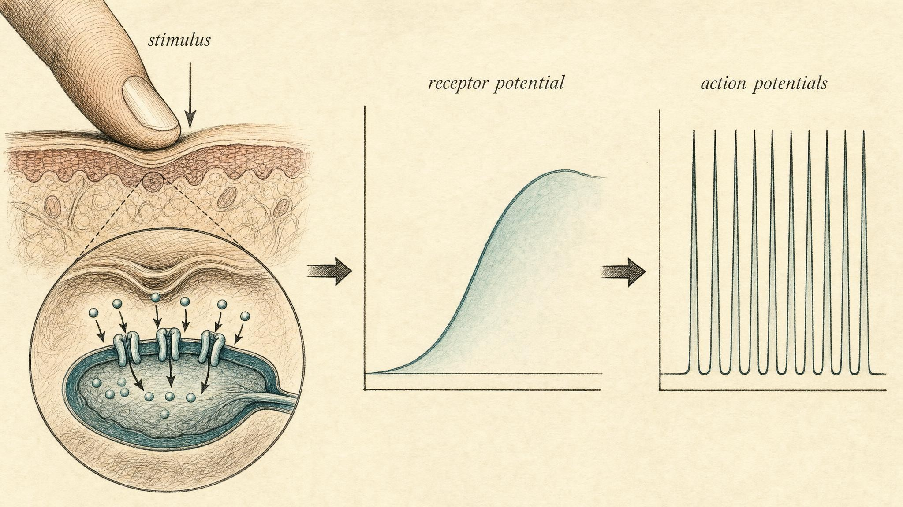

Listening from the Inside
Transduction turns the world into spikes, adaptation decides which spikes matter, and interoception is how the body tells the brain what state it is in.
Sit still for a moment and try to feel your own heartbeat without touching your wrist or your chest. No pulse taking, just listening. Some of you will sense a steady thud almost immediately. Others will strain and catch nothing at all, or will mistake the tick of a clock, or the pressure of your own attention, for a beat. Now try something easier. Notice the chair or the floor pressing against you right now. There it is, obvious, except that a moment ago, before this sentence mentioned it, you were not feeling it at all, even though the pressure never changed.
Those two small experiments are this whole chapter in miniature. One shows how strangely dim the sense of your own insides can be. The other shows that even a strong, constant signal can vanish from awareness entirely, without the signal itself ever weakening. Both are clues to how the nervous system decides what is worth reporting, and both are about to reshape what you think the word sensation actually means.
A learner named Cato will walk through this chapter with you. Cato wears a small ring that measures heart rate variability, the beat to beat fluctuation in the time between heartbeats, and reports a single number on his phone every morning. Some mornings the number frightens him. Other mornings it reassures him, sometimes more than it should. He has started treating that number as a verdict on how well his nervous system is holding up, and by the end of this chapter you will understand exactly why that habit is both understandable and mistaken. Cato is not a patient and not a diagnosis. He is a stand in for an experience many people share: a body that speaks in a language nobody ever taught us to read, and a piece of technology offering to translate it, whether or not the translation deserves to be trusted.
Turning the Arrows Around
For the last several chapters, this course followed signals outward. A decision became a command, a command became a muscle contraction, an autonomic setpoint became a change in heart rate. We traced the efferent half of the map, the pathways that carry orders from the center of the nervous system out to the periphery. Now we turn every arrow around and follow the far larger flow moving the other way, the afferent half, the news arriving from the body and from the world.
The volume of that inbound traffic is hard to overstate. At every instant, your skin, eyes, ears, joints, gut, blood vessels, and airways are generating streams of signals bound for the spinal cord and brain. The nervous system's problem is not a shortage of information. It is a flood, arriving from every direction, every moment, without pause. Most of this chapter is about two elegant solutions to that flood. The first is transduction, the universal trick for turning a physical event into the neural language of spikes. The second is adaptation, the trick for ignoring almost all of it, so the important parts can still be heard over the noise.
Then we make a turn that reorganizes the whole picture. Instead of marching through the classic five senses one at a time, we will split sensation along a different seam entirely, the difference between sensing the world outside you, called exteroception, and sensing the state of the body that is you, called interoception. That second sense, the one you were straining to use when you hunted for your own heartbeat a moment ago, turns out to be the raw material of emotion, effort, and the plain feeling of being alive. It is also the sensory partner to the autonomic and stress systems built in earlier chapters of this course. A brake you cannot feel is a brake you cannot use.
The Universal Grammar of Sensation: Transduction
Here is a fact that sounds trivial but is not: your brain has never touched the world. It sits in the dark, suspended in fluid, sealed inside bone. Light, sound pressure, warmth, the stretch of a full stomach: none of these physical things ever enter the skull. What enters is only ever one currency, the action potential. Every sensory experience you have ever had, from the taste of coffee to the ache of a pulled muscle, was assembled entirely from trains of these identical electrical spikes.
The process that makes this possible is called transduction, the conversion of a physical stimulus into a change in a neuron's membrane potential, and ultimately into a pattern of action potentials. A sensory receptor is, at bottom, a specialized transducer, a cell or a nerve ending built to be exquisitely sensitive to one form of energy and to translate it into the only language neurons speak.
A worked example: pressure on the skin
Consider what happens when you press a fingertip firmly against the edge of a table. The physical event is mechanical, a deformation of the skin. Buried in that skin are mechanoreceptors whose membranes contain mechanically gated ion channels, among them the Piezo family of channels, whose discovery clarified exactly how a bending force becomes an electrical event (Hao et al., 2014). When the membrane is stretched or indented, these channels physically pop open. Positive ions rush in, and the local membrane voltage shifts toward the threshold for firing. This graded shift is called the receptor potential.
Crucially, the receptor potential is not yet an action potential. It is a smooth, analog voltage change whose size scales with the strength of the stimulus. Press harder, and more channels open, and the receptor potential grows larger. But the nerve fiber carrying the message toward the spinal cord speaks only in all or nothing spikes, not in smooth analog waves. So the graded receptor potential has to be encoded: a stronger stimulus produces a larger receptor potential, which produces a higher frequency of action potentials. This is the heart of sensory coding. Intensity is written in rate, spikes per second, not in the size of any single spike (Hao et al., 2014).
The same logic, dressed in different molecular clothing, plays out everywhere in the body. In the retina, photons trigger a chemical cascade that changes membrane voltage. In the cochlea, sound driven fluid motion bends hair cells and opens mechanical channels of their own. In the wall of the gut, stretch from a filling stomach opens stretch sensitive channels on visceral nerve fibers. Different energies, different receptors, one shared destination language. Once you understand transduction as physical stimulus, then receptor potential, then frequency of spikes, you understand the grammar shared by every sense you have, inside the body and out.
It is worth pausing on how far this single grammar reaches, because it is easy to underestimate. Proprioceptors buried in muscle spindles and tendons transduce stretch and tension into the sense of where a limb sits in space, which is how you can touch your own nose with your eyes closed. Thermoreceptors transduce small shifts in skin temperature into warmth or cold. Nociceptors, the receptors behind pain, transduce potentially damaging mechanical, thermal, or chemical events into a signal urgent enough to demand attention immediately. Chemoreceptors in the carotid body transduce the chemistry of the blood itself, oxygen, carbon dioxide, and acidity, into signals that drive the basic rhythm of breathing without any conscious involvement at all. None of these receptors share a body plan, and none of them share a location, yet every one of them ends its work at the identical junction: a graded receptor potential converted into a train of action potentials. Nature did not invent a new signaling system for each sense. It reused one system relentlessly, and built specialization entirely at the front end, in the receptor itself, rather than in the wire carrying the message onward.

That hint deserves a name. Because all spikes look alike, the meaning of a sensory signal is carried largely by labeled lines, by which pathway a spike happens to travel. Spikes arriving on the optic nerve are interpreted as light no matter what actually caused them, which is why pressing gently on a closed eyelid produces a faint spot of light that was never really there. The brain reads the return address on the message, not the content of the message itself.
Adaptation: Why You Notice Change, Not Constancy
Return to that chair or floor pressing against you. The pressure was there the whole time, generating receptor potentials the whole time, yet it vanished from awareness within seconds. This is sensory adaptation: the tendency of receptors and the pathways attached to them to reduce their response to an unchanging stimulus. Adaptation is not fatigue, and it is not a failure of the system. It is a strategy, and a remarkably efficient one.
The logic is informational rather than mechanical. A signal that never changes carries almost no new information after its first moment. If a receptor fired at a constant rate forever to report still pressing, still pressing, still pressing, it would waste energy and clog a limited channel with redundancy the brain does not need. Far more useful is a system that announces itself loudly at the onset of a stimulus, quiets down once the stimulus proves constant and unremarkable, and then announces itself loudly again the instant anything changes. Wark, Lundstrom, and Fairhall (2007) frame adaptation in exactly these terms, as a mechanism for efficient neural coding, in which the nervous system continually retunes itself to the current statistics of its input, spending its limited bandwidth on what is new rather than on what has already been settled.
This is why adaptation operates across an enormous range of timescales, from milliseconds inside a single channel to seconds and minutes across a whole pathway (Wark et al., 2007). Your eyes adapt to a dark room over many minutes. A single touch receptor can stop responding to steady pressure in well under a second. Different jobs, same underlying principle: track the change, discard the constant.
Fast and slow: two ways to report a stimulus
Not all receptors adapt at the same rate, and the difference is functional rather than incidental. Fast adapting receptors, sometimes called phasic receptors, respond briskly to the onset and offset of a stimulus and fall silent in between. They are change detectors, ideal for sensing vibration and texture. Slow adapting receptors, sometimes called tonic receptors, keep firing throughout a sustained stimulus, though at a gradually declining rate. They are better suited to reporting an ongoing state, such as the position of a joint or a steady pressure that still needs to be tracked (Hao et al., 2014).
You have a felt example of both kinds right now. A fast adapting population is why you feel the exact instant you put on a wristwatch, and then forget it is there entirely; the "on" signal is loud, and the "still on" signal is nearly silent. A slow adapting population is why, if you consciously attend to it, you can still recover a faint ongoing sense of the watch's weight on your wrist. The widget below lets you drive both kinds of receptor directly and watch the difference for yourself.
Adaptation is also why walking into a bakery hits you with a wave of scent that fades within a minute, even though the same molecules keep drifting through the air the entire time you stand there, and why stepping from bright daylight into a dim room leaves you briefly blind before your visual system slowly retunes itself to the new baseline. Neither example is a failure of the nose or the eye. Both are the identical strategy at work: reset the baseline to whatever is currently present, and spend the system's limited attention on whatever changes next. The cost of this strategy is real. It is exactly why a person who works around a constant background hazard, a factory floor or a kitchen full of ongoing low grade odors, can stop consciously registering a stimulus that a visitor would notice instantly. The benefit is just as real. Without adaptation, the nervous system would be permanently shouting about yesterday's news, with no bandwidth left for today's.
Two lessons should fall out of playing with that meter. First, the firing rate spikes hard at onset and then decays, even though the stimulus bar itself never moves. The receptor is not measuring the world's steady state. It is measuring change over time. Second, when you raise the intensity partway through, the receptor re-ignites immediately. It had not run out of anything. It had simply decided the old level was old news, no longer worth reporting. This is efficient coding made visible (Wark et al., 2007): the system spends its spikes on the edges of events, not on the events themselves.
Hold onto this idea of a system tuned to change and effectively blind to constancy. It will explain, in the second half of this chapter, one of the more consequential features of the human mind: that a body humming along in a stable, healthy state generates almost no felt signal at all, which is exactly why so many people are strangers to their own interiors until something changes.
Two Directions of Sensing: Exteroception and Interoception
Now for the reorganizing move promised earlier. The traditional approach sorts sensation by modality: vision, hearing, touch, taste, smell. That grouping is useful, but it hides a deeper split that the modern research literature treats as fundamental, the difference in direction. Some senses point outward, toward the world. Others point inward, toward the body itself.
Exteroception is the sensing of the external environment: the light bouncing off this page, the sound in a room, an object resting under your fingers. These are the senses most people mean when they say "the five senses," and they are built for high spatial and temporal resolution. You can localize a touch to within a millimeter and hear a click within a few milliseconds of it occurring. Exteroception answers a single question: what is out there?
Interoception answers a different question entirely: what is going on in here? It is the sense of the internal physiological condition of the body, heart rate, breathing, gut fullness and motility, temperature, blood chemistry, the burn of working muscle, the urge to breathe, the pang of hunger or thirst. Chen and colleagues (2021), in a coordinated overview of the field from the National Institutes of Health, treat interoception as a distinct sensory domain with its own receptors, its own ascending pathways, and its own destinations in the brain, and they draw a firm line between it and exteroception rather than treating it as an afterthought.
Craig's reframing: the whole physiological condition of the body
For much of the twentieth century, "interoception" meant little more than crude visceral sensation, the dull ache of a distended organ and not much else. The influential reframing came from the neuroanatomist A. D. Craig (2002), whose landmark review redefined interoception as the sense of the entire physiological condition of the body: not just the gut and the bladder, but temperature, pain, itch, muscle and joint state, hunger, thirst, and even air hunger, the full readout of the flesh. Craig proposed that this afferent representation forms the substrate of subjective feeling and, ultimately, of self-awareness itself. He gave the body as sensed a memorable name, "the material me."
Craig also gave the reframing an anatomical spine. He identified a lamina I spinothalamocortical pathway, a dedicated line carrying signals about the body's condition up through the spinal cord and thalamus and into the cortex, as the structural foundation of interoception (Craig, 2002). The point that matters for a working model is not the anatomical vocabulary. It is that interoception is not a vague afterthought hanging off the "real" senses. It is a full and dedicated afferent system, with its own wiring, and its destination in the cortex turns out to be significant, as the next section will show.
The Vagus and the Ascending Route
Where does interoceptive news actually travel? A great deal of it rides the vagus nerve, the same nerve met earlier in this course as the highway of the parasympathetic, rest and digest, side of the autonomic nervous system. But there is a fact about the vagus that most people, even people who mention it constantly, get backward. The vagus is not primarily a command line running down to the organs. It is overwhelmingly a sensory nerve. Roughly eighty percent of its fibers are afferent, carrying signals up from the heart, lungs, and gut toward the brain, a ratio documented in the classical anatomical work of Berthoud and Neuhuber (2000) and confirmed in more recent interoception research (Paciorek & Skora, 2020).
That single statistic reorganizes the whole autonomic story. Earlier in this course, the vagus was treated mainly as the parasympathetic brake, an outbound cable carrying instructions to slow the heart and support digestion. That description is accurate, but it describes the minority of the traffic. The dominant flow runs the other way: the body constantly telling the brain how it is doing. The vagus is, first and foremost, the nervous system's chief interoceptive conduit (Paciorek & Skora, 2020).
These afferents arrive first at a brainstem structure called the nucleus tractus solitarii, often abbreviated as the NTS, a hub that functions as the reception desk for visceral news. From there, signals relay onward through the parabrachial nucleus and the thalamus, then upward to the hypothalamus, the insular cortex, and the anterior cingulate cortex (Chen et al., 2021). The insular cortex deserves particular attention. It is where the many separate strands of bodily signal are integrated into one unified sense of the body's condition, the closest thing the brain has to a neural home for Craig's "material me" (Craig, 2002). Notice what this destination is not. It is not a motor area, and it is not a passive storage bin. It is where feeling itself gets built.
That question is not rhetorical. It is the practical hinge of this entire module. Recovery, self-regulation, and the winding down of a stress response all depend on the brain having an accurate read of the body's actual state. If the afferent report arriving through the vagus and other pathways is faint or distorted, regulation is operating half blind, adjusting a system it cannot properly see. This is also why this chapter had to arrive after the chapters on the autonomic and stress systems rather than before them. Sensing is the closing of a loop earlier chapters deliberately left open.
It also helps to see why the eighty percent figure surprises so many learners the first time they meet it. Popular accounts of the vagus nerve, especially outside formal biology, tend to describe it purely as a switch to be flipped, something a person activates through breathing exercises or cold exposure in order to summon calm on command. That framing is not entirely wrong, the vagus does carry outbound, calming instructions, but it quietly skips the larger half of the story. A nerve that is mostly sensory is not best understood as a lever. It is closer to a continuous news feed, and the outbound calming signal is only possible once the brain has correctly read what the feed is reporting. Treating the vagus purely as an on switch is a little like describing a telephone only by its ringer, while ignoring that most of what the line actually carries is someone talking.
Why Inner Signals Are Vague, and the Brain Predicts
Here is where interoception becomes genuinely strange, and genuinely important. Exteroceptive senses tend to be sharp. Interoceptive ones are often maddeningly blurry. Most people cannot reliably report their own heart rate from feeling alone. Hunger, anxiety, fatigue, and even the urge to urinate can all be confidently misidentified, sometimes for one another. Why is the sense that matters most for emotion also one of the least precise?
Part of the answer is adaptation, which can now be cashed in directly. A healthy body sitting in a steady state, heart beating regularly, breath even, temperature stable, is itself a constant stimulus. And a constant stimulus is exactly the kind of thing receptors stop reporting (Wark et al., 2007). The very homeostasis that keeps a person alive also makes the interior quiet. A heartbeat becomes noticeable when it changes, pounding after climbing stairs or skipping during a moment of fear, far more than when it simply ticks along at its usual pace.
But there is a deeper answer, and it sits at the current frontier of the field. The cognitive scientist Anil Seth (2013) proposed that emotional feelings do not arise from a direct readout of bodily signals at all. Instead, the brain continuously runs a predictive model of what its body should be doing, generates expectations from that model, and compares those expectations against the noisy, ambiguous afferent stream actually arriving. What a person feels is the brain's best inference about the causes of its interoceptive signals, not the raw signals themselves. Seth called this process interoceptive inference.
Extended with the theoretical neuroscientist Karl Friston into a broader framework called active inference (Seth & Friston, 2016), this idea flips the classic model of perception on its head. The brain is not a passive receiver, patiently waiting to be told how the body feels. It is a prediction engine, mostly generating expectations in advance and updating them only when the incoming prediction error grows large enough to matter. On this view, even reflexive autonomic responses are partly shaped by descending predictions: the brain predicts a certain heart rate, and the body is nudged toward fulfilling that prediction, with any mismatch resolved either by revising the belief or by acting to change the body itself (Seth & Friston, 2016).
Two consequences follow that are worth sitting with. First, feeling is constructed rather than simply received, which is one reason the same racing heart can be labeled excitement before a performance and labeled dread during a panic. The bodily signal is genuinely ambiguous. The interpretation does most of the work. Second, when the predictive model itself becomes chronically miscalibrated, when the brain expects danger by default and reads every ordinary twinge as a threat, the result is the felt signature of conditions in which interoceptive prediction error gets resolved not by calming the body but by escalating the alarm (Seth, 2013; Seth & Friston, 2016). Researchers have also worked to separate two things ordinary language tends to blur together: how accurately a person's felt sense actually tracks their physiology, called interoceptive accuracy, and how confident that person is in their own reading, called interoceptive awareness. Garfinkel and colleagues (2015) showed that these two dimensions can diverge sharply. A person can feel very sure about a bodily signal while being almost entirely wrong about it, and that gap between confidence and accuracy is itself something a predictive brain will happily paper over.
The self-check inside that widget makes the point felt rather than abstract. Most people, asked to count their own heartbeats for thirty seconds without touching a pulse, are off by a wide margin and do not know it, because the brain confidently supplies a number drawn from its predictive model when the true afferent signal is too faint to count accurately. That gap between felt confidence and measured accuracy is the everyday face of interoceptive inference (Seth, 2013; Garfinkel et al., 2015).
The Line This Chapter Does Not Cross
Before turning to Cato's own situation, it is worth naming the frame that governs everything in this chapter, because interoception is exactly the territory where education and self-diagnosis are most easily confused. A racing heart, a knotted stomach, a wave of dread with no obvious trigger: all of these are real interoceptive events, and all of them can mean many different things, from a strong cup of coffee to a genuine cardiac or psychiatric condition worth a clinician's attention. Nothing about understanding transduction, adaptation, or predictive processing equips a learner to sort those possibilities out for themselves or for anyone else.
That boundary follows directly from the physiology already covered in this chapter. Interoceptive accuracy and interoceptive awareness are not the same thing, and a confident feeling is not proof of an accurate one (Garfinkel et al., 2015). A person who has learned that the brain predicts as much as it perceives has learned something valuable, but also something that should make them more careful, not less, about turning a felt sense into a verdict. The correct response to a persistent or worrying bodily signal is not a better mental model of interoception. It is a conversation with a professional who can examine the body the signal is coming from.
Case Study: Cato and the Number on the Ring
Run Cato's situation through this chapter and most of the mystery falls away, not into a verdict about his health, which is not this course's place to give, but into an accurate account of what his device can and cannot tell him. Start with what the ring is actually doing. It is a transducer, in the same technical sense as a mechanoreceptor in skin. An optical sensor detects small changes in blood volume with each heartbeat and converts that physical signal into a number, an estimate of the variation in time between beats. That number is a genuine measurement of something real. It is not, however, a direct readout of how his nervous system is holding up. It is one narrow slice of afferent information, transduced by a machine rather than felt by a body, and then handed to Cato's own predictive brain to interpret.
That handoff is where the trouble starts. Cato cannot feel his own heart rate variability the way he can feel a hand on his shoulder. What he feels is his own interoceptive inference, built from a genuinely ambiguous internal state and now further colored by a number on a screen that his brain treats as a strong prior. Seth's account of interoceptive inference (2013) predicts exactly this pattern: a low number primes an expectation of threat, and an ordinary morning gets read through that expectation, so an unremarkable flutter of nerves before a normal day gets labeled as evidence the number was right. The number is not neutral information sitting quietly beside his felt experience. It actively reshapes the felt experience.
Move to the mornings when the number is high and Cato feels invincible. This is adaptation and prediction working together in the opposite direction. A high number sets an expectation of resilience, so ordinary signs of accumulating fatigue during a hard workout get discounted rather than reported, in much the same way a fast adapting receptor stops reporting a steady, unchanging pressure. Cato is not imagining this. He is experiencing a real interaction between a device that transduces one narrow physiological measure and a brain that predicts far more than it can directly perceive.
Here is the part that matters most, and it is where the line from the previous section does real work. Nothing in this account tells Cato whether his fluctuating heart rate variability reflects normal day to day variation, poor sleep, dehydration, overtraining, or something a clinician would want to examine more closely. Those are genuinely different possibilities with genuinely different implications, and no amount of understanding transduction or prediction can sort them out from the outside. The right move for Cato is not to trust the ring uncritically, and it is not to distrust it uncritically either. It is to treat the number as one imperfect data point, hold his interpretation of it loosely, and bring any persistent or worrying pattern to a professional who can evaluate his actual physiology rather than his felt story about it. This chapter did not diagnose Cato and could not. What it gave him was an accurate account of why his device and his felt sense sometimes disagree, and a clearer sense of where his own understanding should stop.
Closing the Loop, and Why It Is Trainable
Step back and look at the whole architecture built across this course so far. Earlier chapters gave the basic unit of neural signaling and the map of the nervous system with its two directions. Later chapters built the autonomic and stress systems as outbound regulation, a brake and an accelerator working the body from the center outward. This chapter supplies the missing return path, the afferent stream that tells the regulating brain what state the body is actually in. Sensing, deciding, and acting is now a closed loop rather than a one way arrow.
Here is the encouraging part. Because felt experience is a skill of interpretation as much as it is a fact of wiring, interoceptive ability can be improved. Lazzarelli and colleagues (2024), reviewing mind and body interventions, treat the capacity to detect, interpret, and integrate bodily signals as genuinely trainable, reachable through top down attentional practices such as mindful attention to breath and body, and through bottom up movement and expressive practices. Their central claim connects directly to the aim of this whole module: because interoception supplies the raw material of emotion, sharpening it improves emotion regulation. A person regulates what they can feel, and what a person can feel, they can learn to feel more clearly.
This is also why the recovery story from earlier chapters stays genuinely unfinished without this one. Engaging a parasympathetic brake is not only a matter of outbound signaling. It depends on an inbound sense of the body's rising and falling arousal. A person with clearer interoception has, in effect, a more accurate gauge on the dashboard, and a gauge that can actually be read is a system that can actually be steered.
Notice, too, what this closes off as much as what it opens up. A closed loop is not a promise that the body's reports will always be pleasant, or even accurate on any given day. It is a promise that the two directions of sensing, outward toward the world and inward toward the self, are built from the same underlying grammar and answer to the same underlying logic. Transduction turns a physical event into spikes whether that event happens on the surface of the skin or deep in the wall of a blood vessel. Adaptation quiets a signal whether it originates outside the body or inside it. Prediction shapes what gets felt whether the raw material is a sound in a room or a heartbeat in a chest. Once a learner sees that the exteroceptive and interoceptive halves of the nervous system are variations on one design rather than two unrelated systems, the whole of this course starts to read less like a list of separate facts and more like a single argument, carried from chapter to chapter, about how a body built from electrical signals manages to know anything about itself or the world at all.
The brain does not simply receive feelings. It infers them, from a body that mostly whispers, in a language of change set against a background of predicted calm.
A synthesis of Craig (2002) and Seth (2013)
Key Takeaways
- Transduction converts any physical stimulus into a graded receptor potential, which is encoded as the frequency of action potentials. Intensity lives in rate, and meaning lives in which labeled line the spike travels.
- Adaptation is a coding strategy, not a failure: receptors quiet down to unchanging stimuli so the system spends its limited bandwidth reporting change. Fast adapting receptors flag onset and offset; slow adapting receptors track ongoing state.
- Exteroception senses the outside world with high resolution; interoception senses the body's own physiological condition, heart, breath, gut, temperature, chemistry, and is the substrate of feeling and self-awareness (Craig, 2002).
- The vagus nerve is roughly eighty percent afferent: its dominant traffic is bodily news traveling up to the nucleus tractus solitarii and on to the insula, making it the chief interoceptive conduit (Berthoud & Neuhuber, 2000; Paciorek & Skora, 2020).
- Interoceptive signals are often vague because a homeostatic body is a constant, adapted away stimulus. The brain compensates by predicting: you feel its best inference about the body, not a raw readout (Seth, 2013; Seth & Friston, 2016), and confident feeling is not the same as accurate feeling (Garfinkel et al., 2015).
- A recovery brake you cannot feel is a brake you cannot use. Interoceptive ability is trainable, and sharpening it improves emotion regulation (Lazzarelli et al., 2024).
- This is education, not diagnosis. A vague or worrying bodily signal belongs with a qualified clinician, not a course, a device, or a forum.
Now that both directions of the loop are in place, the next chapter returns to the outbound side to build the motor system in earnest, and the reason it belongs here will be immediate. Movement that is not guided by a continuous stream of sensory feedback is clumsy, drifting, and blind. The action studied earlier in this course turns out to lean on the sensing studied here.
References
Berthoud, H. R., & Neuhuber, W. L. (2000). Functional and chemical anatomy of the afferent vagal system. Autonomic Neuroscience, 85(1-3), 1-17. https://doi.org/10.1016/S1566-0702(00)00215-0
Chen, W. G., Schloesser, D., Arensdorf, A. M., Simmons, J. M., Cui, C., Valentino, R., Gnadt, J. W., Nielsen, L., Hillaire-Clarke, C. S., Spruance, V., Horowitz, T. S., Vallejo, Y. F., & Langevin, H. M. (2021). The emerging science of interoception: Sensing, integrating, interpreting, and regulating signals within the self. Trends in Neurosciences, 44(1), 3-16. https://doi.org/10.1016/j.tins.2020.10.007
Craig, A. D. (2002). How do you feel? Interoception: The sense of the physiological condition of the body. Nature Reviews Neuroscience, 3(8), 655-666. https://doi.org/10.1038/nrn894
Garfinkel, S. N., Seth, A. K., Barrett, A. B., Suzuki, K., & Critchley, H. D. (2015). Knowing your own heart: Distinguishing interoceptive accuracy from interoceptive awareness. Biological Psychology, 104, 65-74. https://doi.org/10.1016/j.biopsycho.2014.11.004
Hao, J., Bonnet, C., Amsalem, M., Ruel, J., & Delmas, P. (2014). Transduction and encoding sensory information by skin mechanoreceptors. Pflügers Archiv, European Journal of Physiology, 467(1), 109-119. https://doi.org/10.1007/s00424-014-1651-7
Lazzarelli, A., Scafuto, F., Crescentini, C., Matiz, A., Orrù, G., Ciacchini, R., Alfano, G., Gemignani, A., & Conversano, C. (2024). Interoceptive ability and emotion regulation in mind-body interventions: An integrative review. Behavioral Sciences, 14(11), 1107. https://doi.org/10.3390/bs14111107
Paciorek, A., & Skora, L. (2020). Vagus nerve stimulation as a gateway to interoception. Frontiers in Psychology, 11, 1659. https://doi.org/10.3389/fpsyg.2020.01659
Seth, A. K. (2013). Interoceptive inference, emotion, and the embodied self. Trends in Cognitive Sciences, 17(11), 565-573. https://doi.org/10.1016/j.tics.2013.09.007
Seth, A. K., & Friston, K. J. (2016). Active interoceptive inference and the emotional brain. Philosophical Transactions of the Royal Society B, 371(1708), 20160007. https://doi.org/10.1098/rstb.2016.0007
Wark, B., Lundstrom, B. N., & Fairhall, A. (2007). Sensory adaptation. Current Opinion in Neurobiology, 17(4), 423-429. https://doi.org/10.1016/j.conb.2007.07.001